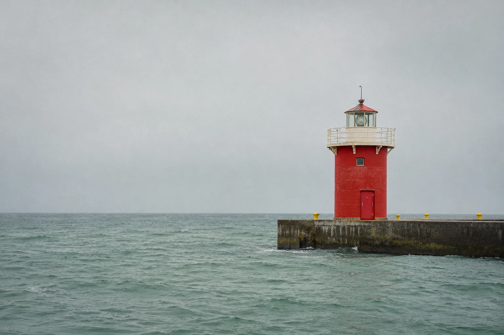

Composition atlas
Soundings is a one-day programme at Quay House. A passer-by needs its name and date. A visitor at the door needs the room for the afternoon session. What deserves the most space depends on which person you are designing for.
Each plate sets the same programme on a different grid. The dashed outer guides mark the inline margins. Dotted outlines mark occupied modules. In the two unequal grids, the shaded band marks the column gutter. Close Construction lines to see the finished page. Then try finding the room for the 14:00 session in all three. The proposed advantages await reader testing.
Axial poster
Construct one full-width field around a central axis. Centre the announcement on that axis, then subdivide only the timetable into equal tracks. This is a proposal for an entrance poster where knowing the event’s name comes first.
Construction lines
One axial field. The inline margins each take 4% of the plate width, bounded between 1rem and 2.5rem. Centre the timetable at a maximum of 40rem. From 38rem plate width, divide that timetable into two equal tracks separated by one margin-width gutter.
Quay House
Soundings
A day of listening at the water’s edge.

Harbour walk
Meet at the east steps for a walk along the breakwater.
Listening room
Meet in the upstairs studio to hear recordings from the quay.
Asymmetric spread
Build two unequal tracks and carry their edges through the next row. The short introduction can give up width to the larger field beside it. Sharing the tracks with the timetable gives each session an alignment already established above.
Construction lines
Use the same inline margins. From 38rem plate width, subtract one margin-width gutter and divide the remainder into two and three parts. The schedule spans both tracks. The second session starts on the same edge as the photograph above it.
Quay House
Soundings
A day of listening at the water’s edge.
Harbour walk
Meet at the east steps for a walk along the breakwater.
Listening room
Meet in the upstairs studio to hear recordings from the quay.
Programme index
Reserve one track for the identity and let the schedule span two rows in the other. Give each session the same internal arrangement for time, name and disclosure. This is a candidate for a visitor who already recognises the event and needs to choose where to go.
Construction lines
Keep the margins and column gutter of the spread. Change the track ratio to 1:2 and the row gutter to 1rem. The right module spans both rows. Inside it, each session starts with a time of identical digit width followed by space for a variable-length name.
Quay House
Soundings
A day of listening at the water’s edge.
Harbour walk
Meet at the east steps for a walk along the breakwater.
Listening room
Meet in the upstairs studio to hear recordings from the quay.
The 38rem breakpoint belongs to these specimens. To adapt an index for a museum guide or a departure board, start with the longest title, the widest time and the full meeting note. Enlarge the type. Fold the columns where those items begin to crowd one another. The shared edge of the times still serves the lookup task in a single column.
Build a different grid in the laboratory, or read how the study separates track geometry from judgements of harmony.